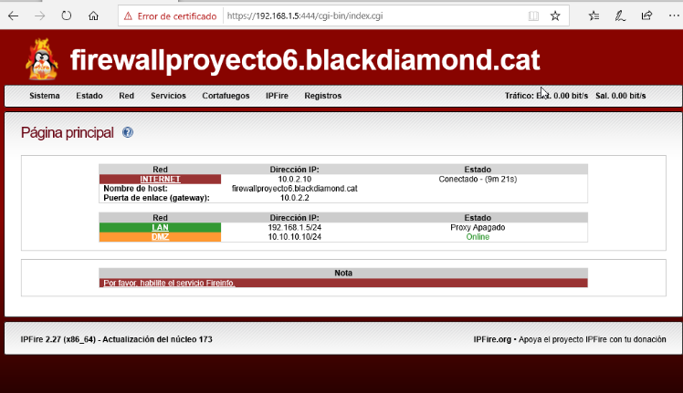
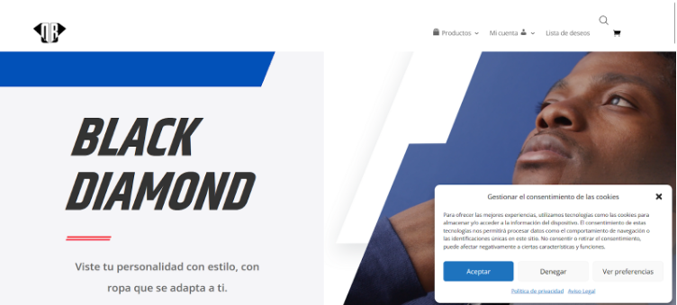

Making of Hardening de la Empresa:
Aquí se explica el proceso a seguir para la configuración del hardening de nuestra empresa:
La configuración del hardening se dividió en cuatro apartados distintos, siendo los siguientes:
- 01 - Control de Red
- 02 - Migración de Wordpress
- 03 - Gestión de Documentos
- 04 - Configuración de Backups y Hardening
- 05 - Documento Final
- 06 - Presentación
01 - Control de Red
Se instaló el SO de Firewall basado en linux IPFire en el que se configuró una DMZ dónde se podrán alojar servicios de nuestra red de forma segura a los que se podrá acceder desde internet (Una página web en este caso). Con este SO también se configuraron tres tipos diferentes de filtraje con el proxy. Esto hará que la IP de nuestro GTW de nuestra LAN cambie a la IP del firewall siendo esta la 192.168.1.5
02 - Migración de Wordpress
Utilizando el plugin All in one wordpress migration se exportarán todos los archivos de la web, acto seguido se instalará en la DMZ un Ubuntu server LTS 20.04 en el que se instalará apache2 como servidor web, también se instalará mysql para la gestión de la base de datos. Se hará toda la configuración del servidor apache y se instalará un wordpress nuevo, una vez instalado el nuevo wordpress se hará la importación del que se exportó anteriormente, esto se hará utilizando el mismo plugin de la exportación. Una vez se importe el wordpress antiguo simplemente se deberá configurar el DNS de la red dónde se agregará el dominio del web.
La instalación se realizó en la DMZ de la red para que desde internet se tenga acceso a la web alojada en la DMZ pero no a la LAN, esto dará un nivel de seguridad extra a la LAN.
03 - Gestión de Documentos
Instalación y configuración de un SO de NAS basado en Linux, se instaló OpenMediaVault qué incluirá una interfaz web para la gestión NAS. Se creará un RAID 10 porque combina velocidad y protección de datos. Ofrece un rendimiento más rápido al escribir y leer datos, y tiene alta tolerancia a fallos. Además, permite más capacidad de almacenamiento y es fácil de ampliar. Se creó una carpeta compartida y se configuraron los permisos de acceso a los usuarios de LDAP.
04 - Configuración de Backups y Hardening
Se configuraron copias de seguridad automáticas tanto para nuestra web como para los usuarios de LDAP. Se podrá configurar con crontab una copia de seguridad mensual automática pero que también se podrá ejecutar manualmente. Esta copia se guardará dentro de una carpeta compartida en el NAS. Para las copias de seguridad de wordpress se utilizará el plugin UpDraftPlus que se configurará para hacer dos copias de seguridad mensuales tanto de archivos como de base de datos mediante FTP, en esta también se podrá forzar una copia de seguridad manual cuando se desee. Por último se configurarán unos requisitos mínimos de seguridad para las contraseñas mediante LDAP.